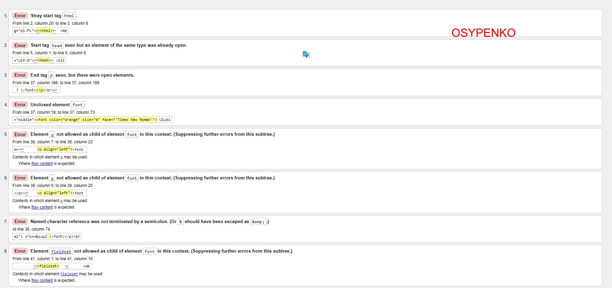
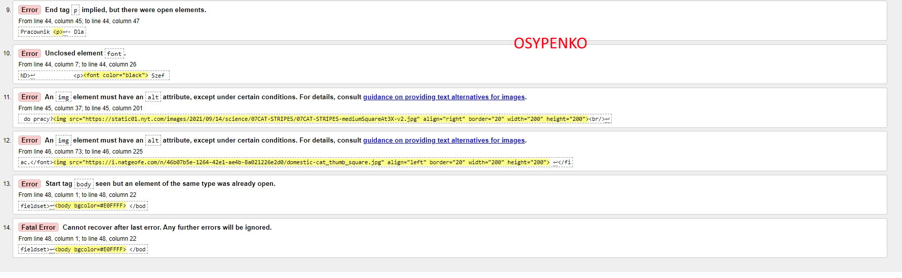

Wnioski z walidacji
Walidacja nie powiodła się,
było 86 błędów, z których większość zawierała tekst:
"element is obsolete. Use CSS instead",
ale ponieważ jeszcze nie studiowaliśmy CSS-te
błędy postanowiono odfiltrować.
Po czym pozostało 14 błędów. Część z nich była powiązana
z hierarchią znaczników, a część wymagała obowiązkowego
parametru " alt " (alternatywna nazwa obrazu, na wypadek
gdyby przeglądarka nie mogła go wyświetlić) do zdjęć.
wstecz